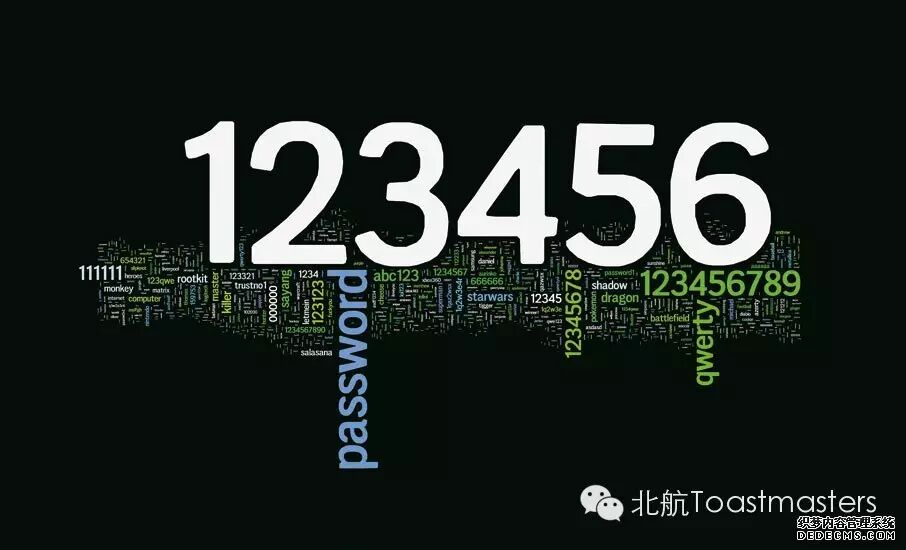

Interpersonal Closeness
Many of us may have been troubled by the following situations: When faced with a stranger, you feel uneasy and do not know how to start a coherent dialogue; you know of someone for a period of time and meet them almost every day, but you do not feel you actually know them .Building up interpersonal closeness is not an easy job .Yet there are methods to improve interpersonal closeness in a comparative quick way.Let's look forward to this week's table topic section.
Wonderful Moments
In some moments we were touched by minor details; in some seconds, we were amused by unexpected surprise; sometimes we were so impressed that we felt some missing part in heart filled up.We may run into so wonderful moments that we wish time could stop and the moments could be held eternally. In this speech, Bowen will open a window of wonderful moments to us ,welcome him.

Password Sucks
When you start up your computer, when you open your phone,when you want to log on an account,when you want to draw a sum of money,even when you want to unpack your suitcase, usually the first movement of you is to key in passwords.What if you forget your password or mix up one with the other? There must be something interesting as well as embarrassing comming up.Let's welcome Keven to tell us about his password sucks.